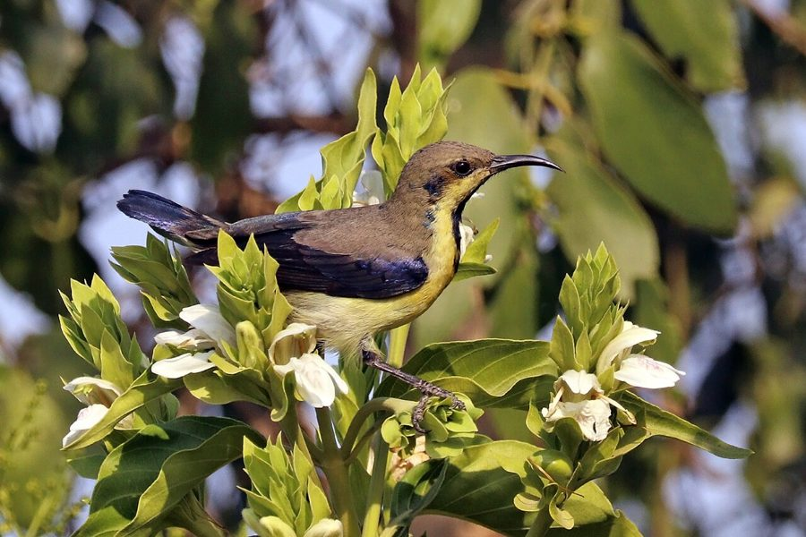

शक्कर खोराPurple Sunbird
Cinnyris asiaticus · Nectariniidae · BRD-0016

- Scientific name
- Cinnyris asiaticus (Latham, 1790)
- Family
- Nectariniidae
- Hindi
- शक्कर खोरा / जामुनी मधुचूषक
- Status here
- native
- IUCN
- LC
When to look कब देखें
Present all year.
शक्कर खोरा / Purple Sunbird
Cinnyris asiaticus (Latham, 1790) — Nectariniidae
शक्कर खोरा — बगीचों और फूलों का चमकीला रत्न। नर पक्षी की पीठ, गला और सीना सुबह की धूप में नीला-बैंगनी-हरा चमकता है — जैसे किसी ने धातु पर इंद्रधनुष उकेर दिया हो। पतली घुमावदार चोंच से तुलसी, मदार और महुए के फूलों में झाँकता है; पराग अनजाने में माथे पर उठाकर दूसरे फूलों तक ले जाता है। मादा सादी जैतूनी-भूरी होती है — पर घोंसला दोनों मिलकर बनाते हैं, पत्तियों, मकड़ी के जाले और पंखों से बुनी हुई पर्सनुमा थैली। बस्ती जिले के हर फलदार बगीचे में यह है — बशर्ते साल भर कुछ न कुछ फूलता रहे।
Quick Identification त्वरित पहचान
| Feature | Description |
|---|---|
| Size | 10–11 cm; 5–8 g — among India's smallest resident birds |
| Male (breeding) | Metallic blue-purple-green upperparts and throat; maroon-crimson chest band; blackish belly |
| Male (eclipse) | Olive-brown above, pale yellow below — retains dark streak on throat as ID mark |
| Female | Olive-brown above; pale yellow-white below; faint eyebrow stripe |
| Bill | Long, slender, strongly decurved — shaped for probing tubular flowers |
| Call | Sharp rapid chwit-chwit; male sings from exposed perch — heard before seen |
| Behaviour | Perches to probe flowers; brief hovering only; tail frequently pumped |
Field tip: In morning sun the breeding male flashes electric blue-purple on throat and back — unmistakable. Eclipse males (July–September) look like females but retain a dark streak down the throat. Look on Calotropis, Neem flowers, and garden Hibiscus. The sharp chwit call gives position away before the bird is seen.
Morphology आकारिकी
Biometrics (subspecies asiaticus, northern India — the form in eastern UP):
| Measurement | Range |
|---|---|
| Total length | 100–110 mm |
| Wing (flattened chord) | 50–57 mm |
| Tail | 31–37 mm |
| Tarsus | 13–15 mm |
| Bill (culmen from base) | 16–20 mm |
| Weight | 6–9 g |
- Breeding male: Metallic blue-purple crown, back and wings; deep maroon-crimson pectoral band; blackish belly; iridescent purple throat
- Non-breeding male (eclipse plumage): Dull olive above, yellowish below — nearly identical to female — but retains dark streak down throat and breast
- Female: Olive-brown above; pale yellow-white below; faint supercilium
- Bill: Long, slender, strongly decurved — perfectly shaped to access tubular corollas
- Tongue: Brush-tipped, tubular — acts like a grooved channel to draw nectar rapidly
- Length: 10–11 cm; weight 5–8 g — among the lightest resident birds in UP
Vocalisations
The Purple Sunbird is vocal throughout the year, especially during the breeding season.
- Contact and flight call: A sharp, high-pitched chwit or tzit call, repeated as it moves from flower to flower.
- Song: A rapid, excited, buzzy twittering song delivered by the male from an exposed perch, starting with a few tzit notes and rising into a trill.
- Alarm call: A rapid, chattering chee-chee-chee given when a predator (like a Shikra or garden lizard) is nearby.
Ecological Role पारिस्थितिक भूमिका
Primary pollinator of many ornamental and wild flowers. The Purple Sunbird is the ecological equivalent of a hummingbird in South Asia — a dedicated nectarivore that transfers pollen on its forehead and bill as it moves between flowers. Key pollination targets in this region include Calotropis gigantea (FLR-0002), Ocimum tenuiflorum (FLR-0008, Tulsi), Madhuca longifolia (FLR-0021, Mahua), Datura metel (FLR-0015), Lantana camara (FLR-0007), and numerous garden species.
Insect predator during breeding. Despite being primarily nectarivorous, sunbirds shift heavily to insects — small spiders, aphids, flying ants, and tiny beetles — when raising chicks. Protein from insects is essential for nestling development; nectar alone cannot sustain growth.
Mutualism with Calotropis. The large open flowers of Calotropis (madar) are visited regularly, and the pollen-mass (pollinium) sometimes attaches to the bird's bill, achieving cross-pollination — an unusual mechanical system normally associated with bees.
Life Cycle / Phenology जीवन चक्र
- Breeding season: February–May (pre-monsoon peak); some second broods September–October
- Nest: A remarkable pendant purse — plant fibres, spider silk, bark strips, and feathers woven into a hanging pouch with a side entrance hole; outer surface studded with spider egg sacs and lichen; suspended from a branch tip or telephone wire
- Clutch: 2 eggs; pale greenish-grey with brown speckling
- Incubation: ~15 days; female incubates alone; male guards and sings
- Fledging: ~17 days; male begins feeding chicks after hatching
- Eclipse plumage: Males moult to female-like plumage post-breeding (June–August); dark throat streak retained as ID mark
- Lifespan: Up to 5–6 years in wild
Host Plants or Prey आहार
Nectar sources (primary food):
- Calotropis gigantea (FLR-0002) — Madar
- Ocimum tenuiflorum (FLR-0008) — Tulsi
- Madhuca longifolia (FLR-0021) — Mahua
- Azadirachta indica (FLR-0009) — Neem flowers
- Lantana camara (FLR-0007)
- Hibiscus, Bougainvillea, Ixora, banana flowers
Arthropod prey (chick-rearing):
- Spiders (especially young jumping spiders)
- Aphids and mealybugs
- Small flying ants and beetles
- Flower-visiting insects intercepted at flowers
Predators / Natural Enemies शत्रु
- Shikra (Accipiter badius) — primary aerial predator; fast hedge-hugging approach
- Indian Chameleon (Chamaeleo zeylanicus, REP-0003) — ambushes at flower clusters
- Snakes — rat snake and vine snakes raid pendant nests
- Crows — mobbing and nest predation
- Parasites: Blood-sucking hippoboscid flies (Ornithoctona sp.) occasionally found on adults
Agricultural / Human Relevance कृषि प्रासंगिकता
Pollinator of food crops and medicinal plants. Sunbirds pollinate Tulsi (medicinal, sacred), Neem (medicinal, timber), and various fruit-garden plants. In areas where bee populations are declining, sunbird pollination becomes more significant.
Cultural icon. The iridescent male — flashing electric blue-purple in morning sunlight — is one of the most visually striking garden birds in UP. Known across Hindi-speaking north India as शक्कर खोरा (shakkar khora — sugar sucker). Frequently depicted in Mughal miniature painting as a companion to flowering trees.
Indicator of floral diversity. Presence indicates a garden or hedgerow with diverse flowering plants through the year; absence often signals monoculture planting or excessive pesticide use on flowering shrubs.
Expected Locally स्थानीय रूप से अपेक्षित
Not a field record. Written from published accounts for eastern Uttar Pradesh. No confirmed local sighting yet — if you have seen it, that is what the atlas needs.
अभी तक स्थानीय पुष्टि नहीं। यह विवरण प्रकाशित स्रोतों से है, किसी अवलोकन से नहीं।
Found year-round in Basti district gardens, on Neem, Mahua, and Calotropis trees. In February–March, breeding males are highly visible and vocal — singing from exposed perches with an insistent high-pitched series. Eclipse-plumage males (July–September) are frequently misidentified as females. The hanging nest is most easily spotted when the female is constructing it; later it blends perfectly into the vegetation.
Distribution वितरण
Global range: Widespread across South Asia, from the Persian Gulf and Iran through the Indian subcontinent to Southeast Asia.
In India: Found throughout the country, from the foothills of the Himalayas to southern India, excluding only the high-altitude regions.
In Uttar Pradesh: A common and widespread resident across all districts, associated with forests, orchards, agricultural lands, and gardens.
In Basti district / eastern UP: Highly common year-round resident in gardens, village orchards, and scrublands throughout the district.
Range notes: No significant range changes documented.
Research Questions शोध प्रश्न
- Does the Purple Sunbird act as an effective pollinator of Calotropis in this region, or is pollen transfer incidental? Can we measure fruit set in Calotropis plants accessible vs. inaccessible to sunbirds?
- How does the male's eclipse plumage duration vary with latitude and season across the UP population?
- Which flowering species provide the most critical nectar resource during the dry season (November–January) when few plants bloom?
- Do sunbirds show site fidelity — do pairs return to the same garden territory year after year?
- How does urbanisation and garden homogenisation (single-species plantings) affect sunbird density in peri-urban Basti?
Similar Species मिलती-जुलती प्रजातियाँ
| Species | Key Difference |
|---|---|
| Loten's Sunbird (Cinnyris lotenius) | Longer bill; male has elongated central tail feathers; range mostly south India |
| Olive-backed Sunbird (Cinnyris jugularis) | Yellow underparts in male; mostly northeast India |
| Female — Plain Flowerpecker (Dicaeum concolor) | Shorter straight bill; greener olive tone; much smaller range overlap |
Taxonomy & Classification वर्गीकरण
Original description. Cinnyris asiaticus was described by Latham in 1790 in Index Ornithologicus, vol. 1, p. 288. Type locality: India. The genus name Cinnyris is from Ancient Greek kinnyris, a small bird mentioned by Hesychius.
Subspecies. Three subspecies are currently recognised:
| Subspecies | Authority | Range | Notes |
|---|---|---|---|
| C. a. asiaticus | (Latham, 1790) | Indian subcontinent | The nominate form, found in Uttar Pradesh |
| C. a. brevirostris | (Blanford, 1873) | Iran, Pakistan to western India | Shorter bill, paler coloration |
| C. a. intermedius | (Hume, 1870) | Eastern India to Myanmar | Darker plumage, larger size |
Family and order placement. Placed in the order Passeriformes, family Nectariniidae (sunbirds and spiderhunters). This family contains around 145 species in 16 genera. Sunbirds are Old World equivalents of the New World hummingbirds, showing remarkable convergent evolution in morphology and ecology.
Phylogenetic notes. Closely related to other species in the genus Cinnyris, which is highly diverse across Africa and southern Asia. No major taxonomic controversies are currently active for this species.
IUCN status rationale. Evaluated as Least Concern (LC). The species has an extremely large range and a stable population trend, with no evidence of significant population declines or major range-wide threats.
Photo Gallery फोटो गैलरी
References संदर्भ
- Latham, J. (1790). Index Ornithologicus, Systema Ornithologiae. Vol. 1. London.
- Ali, S. & Ripley, S.D. (1987). Handbook of the Birds of India and Pakistan. Vol. 10. Oxford University Press.
- Grimmett, R., Inskipp, C. & Inskipp, T. (2011). Birds of the Indian Subcontinent. 2nd ed. Oxford University Press.
- Bhatt, D. & Bhatt, B. (1994). Foraging and flower selection in Nectarinia asiatica. Journal of the Bombay Natural History Society, 91(2), 227–232.
- BirdLife International (2024). Cinnyris asiaticus. IUCN Red List. Ver. 2024.
- GBIF Occurrence Data — Cinnyris asiaticus records, Uttar Pradesh (2010–2024).
Source file: species/fauna/birds/purple_sunbird.md